Feragun Liandon
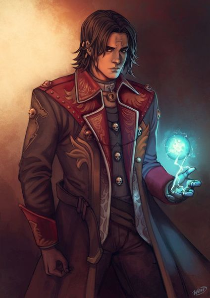
-
Edad:
20 años (aspecto Humano)
-
Raza:
Semielfo
-
Estado Actual
Vivo y perdido
Historia:
Eres Feragun Liadon, un Semielfo de 20 años, apenas estas llegando a tu madurez. Desde que tienes uso de razón tu padre Marlach, un gran mago del pueblo Evergreen, te ha inculcado la ambición por el conocimiento y la magia, tuviste un libro en tus manos antes de aprender a caminar. Por otro lado no tienes recuerdos de tu madre, pues ella se fue de tu hogar a 2 meses de tu nacimiento, pareció esfumarse, nunca supieron nada de ella. Solo sabes, por lo poco que te ha contado tu padre, que es una Elfa llamada Varda. Y lo único que te une a ella es un ; por demás simple, colgante con un símbolo , que ni tú padre supo de que se trataba.
Fuiste creciendo y tu conocimiento junto a tu edad, cada vez te volvías más fuertemente mentalmente, más sabio, más poderoso, pues tu padre siempre te apoyó en tus estudios y el fue un gran maestro para vos,un gran padre.... Ahora bien, hablando de tu padre, siempre fue un hombre obsesionado con sus estudios y ambición de poder, eso no le quito lo excelente padre que fue para vos, ni la bondad que tenia para las personas, pues invertía mucho tiempo también investigando para ayudar y mejorar el pueblo de Evergreen.
Un día encontró en la biblioteca un libro extraño, de una magia desconocida, el cual comenzó a estudiar y analizar, lo que él no sabia era que ese libro tenía algo malo, en su interior guardaba un ente muy maligno y poderoso, mucho más poderoso que Marlach para poder controlarlo. Un día en tus rutinas de exploración en el bosque en busca de hierbas y componentes para pociones, saliste de tu casa y volviste algo tarde, cayendo la medianoche encontraste tu casa totalmente destrozada por dentro, como si un huracán hubiese pasado por ahí, en las paredes habían runas y escritos en un idioma que no conocías, en el medio estaba este libro, el que tu padre había estado estudiando las últimas semanas, pero estaba en blanco, no tenía nada dentro de él.
Esa mañana fue la ultima vez que viste a tu padre, nunca supiste si vive o no, donde se encuentra, si está bien o mal. Lo esperaste por meses, sobreviviendo gracias a la sabiduría que habías adquirido. En tu pueblo nadie te podía ayudar, pues ustedes eran los magos de ese lugar, nadie podría darte respuestas de lo sucedido. Luego de meses te diste cuenta de que el colgante era el único rastro de tu madre, lo que te llevó a estudiarlo intensamente, buscar información de el en todo lo que estuviese a tu alcance. Investigaste incansablemente por meses, hasta que diste con el nombre de un gremio, un lugar muy lejos de tu hogar, y te dispusiste a encontrar ese lugar con una vaga esperanza de encontrar a tu madre, ahora te aventuras a lo desconocido, a un mundo nuevo por descubrir y nuevos desafíos por superar
Sam Hojasdete
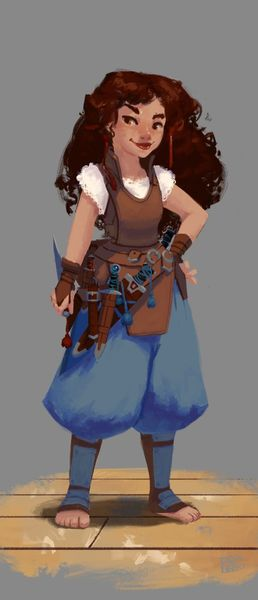
-
Edad:
16 años (aspecto Humano)
-
Raza:
Mediana Pieslijeros
-
Estado Actual
Viva y perdida
Historia:
Sam es una niña de las calles. No recuerda tener otra vida que esa. Toda su vida se trató de luchar para sobrevivir un día más, una noche más. Con el tiempo le hicieron notar lo extraño que era ser un mediano sin hogar y sin familia, así que aún entre los relegados no logró encajar. Nadie en las calles apostaba porque viviera demasiado, excepto Frodo, un niño que solía dormir en su mismo callejón y siempre fue agradable con ella, le contaba historias interesantes y la ayudó a escapar algunas veces que la autoridad la perseguía por robar comida.
Muchas veces debió defenderse de abusivos y otras muchas su cuerpo demasiado pequeño no le permitió hacerlo, desde entonces aprendió a cargar con un cuchillo entre sus prendas.
Con el tiempo, Sam y Frodo se volvieron inseparables, se protegían mutuamente y tramaban cada vez más elaboradas estrategias para engañar y robar. Nunca se trató de ambición, solo intentaban sobrevivir, y, aunque siempre era peligroso, muchas veces se divertían en el trayecto, jugando con disfraces para estafar o utilizando sus caritas de niño triste para manipular a algún que otro buen samaritano.
Un día especialmente hambrientos planearon un robo como cualquier otro. La estrategia era la de siempre: distracción + rapidez = hurto sin pelea. El objetivo era un joven distraído haciendo compras en el mercado local. Frodo destruyó un mercado de panes en una distracción ejemplar, mientras Sam metía sus pequeñas manos en los bolsillos de la víctima. El botín resultó ser mucho más grande de lo esperado, pero la víctima también resultó ser mucho más listo. Pronto tenían a un veloz persecutor tras de ellos, siguiéndolos por cada callejón que tomaran, tan hábil como ellos trepando y saltando tejados. Frodo cayó en sus manos y estaba recibiendo una brutal golpiza cuando Sam volvió para ayudarlo. Intentó quitárselo de encima, intentó golpearlo, intentó morderlo, pero nada detenía a aquel hombre enfurecido con el pequeño Frodo. Aterrada y casi sin pensarlo, Sam tomó su cuchillo y lo clavó en el cuello del agresor, y de pronto todo se detuvo. Los golpes, los gritos, todo se fue silenciando, mientras la sangre corría por su brazo. Ahora mucho más aterrada que antes, tomó a un malherido Frodo y corrió tan rápido como pudo.
El tiempo pasó, las cosas se tranquilizaron, Frodo se recuperó, pero ella nunca volvería a ser igual.
Un día las consecuencias de sus actos llegarían, pero no serían las que imaginaban. Un joven llegó a ellos, les advirtió que sabía lo que habían hecho, dijo que un hombre quería conocerlos y, después de ofrecerles una dirección, les recomendó no ignorar la petición.
Después de mucha discusión decidieron presentarse ante el desconocido, más por miedo a ser expuestos que por verdadero interés. Así conocieron al señor Dumont, un hombre de clase acomodada pero con evidente ausencia de educación. Con tono agradable, les explicó que el joven a quien mataron era de sus mejores hombres, con un futuro brillante. Endureciendo un poco el tono les preguntó qué había pasado y entonces supieron que era mejor decir la verdad.
Con los hechos revelados, el señor Dumont se mostró más decepcionado que enojado, les comentó que esperaba más del muchacho que dejarse robar y matar por dos niños de la calle. Inmediatamente, y de nuevo con buen semblante, les hizo una oferta. Hacer lo mismo que hacían en las calles pero para él, a cambio de comida, un techo y entrenamiento para mejorar sus habilidades.
Así se convirtieron en soldados del señor Dumont, y pronto destacaron por su experiencia y buenos resultados. Cada vez se adentraban más en el mundo criminal y cada vez eran mejores en ello. Siempre como equipo.
Todo marchaba relativamente bien hasta que empezó a marchar relativamente mal cuando en un robo importante las cosas no salieron bien, debieron separarse para huir y cada uno se llevó consigo una parte del botín. Al momento de reencontrarse Frodo no tenía su parte, la había perdido. Acordaron mentir al señor Dumont, decirle que ese era todo el botín, pero era imposible engañar a ese astuto viejo. Así comenzaron horas de interrogatorios y fuertes golpizas, que no se detendrían hasta obtener una confesión. Frodo se mantuvo en su versión, pero Sam fue débil y al borde de la inconsciencia confesó, delató a su amigo.
Luego de eso despertó en la calle nuevamente, sola y adolorida. No podía saber cuánto tiempo había estado inconsciente, pero lo primero que pensó al abrir los ojos fue en Frodo. Con las fuerzas que le quedaban fue a buscarlo, pregunto a todos por él, pero lo único que obtuvo fue "el señor Dumont se encargó de él".
Lo buscó por mucho tiempo, hasta que al fin aceptó que no volvería a verlo. Pensó tantas veces como vengarse, pero cuando la ira se calmaba sabía que no podría siquiera acercarse a ese hombre rodeado de soldados leales.
Nunca se perdonó la debilidad que llevó a su único amigo a la muerte y continuó viviendo de la única forma que sabía hacerlo. Seguía siendo una niña, pero había adquirido habilidades que eran muy valoradas en ciertos ámbitos. Se convirtió en mercenaria, pero ahora trabajaba siempre sola.
En poco tiempo se hizo de un renombre, la niña discreta que por el precio justo soluciona problemas, algo muy conveniente para la alta sociedad. Obtuvo contactos importantes y eventualmente fue reclutada por la unidad elite del reino de Gelderland. Aunque fue difícil para ella, aprendió nuevamente trabajar en equipo y hoy valora por sobre todas las cosas la lealtad de su grupo.
Graham
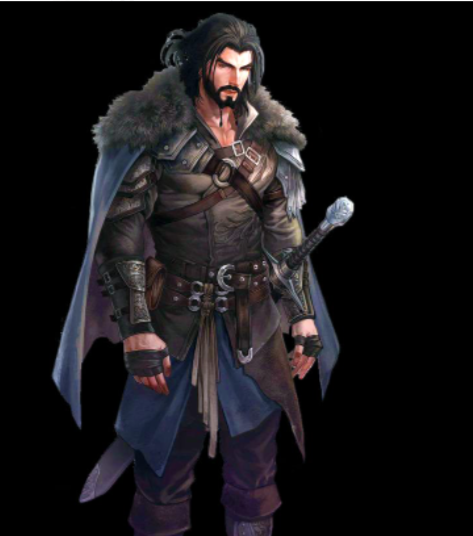
-
Edad:
33 años
-
Raza:
Humano
-
Estado Actual
desconocido
Historia:
Graham no es su nombre real, es el que le dio su "padre adoptivo" a la edad de 12 años, el era hijo de comerciantes viajeros que se movian por las rutas mantenidas, un noche oscura la caravana se perdió en un bosque desconicido, viajaron sin rumbo por 3 días, hasta que fueron emboscados por bandidos.
Graham vio como los bandidos masacraban a toda su familia y otros miembros de la caravana uno por uno, cuando estaba por ser su turno aparecio su salvador, que asesino a todos los bandidos en un abrir y cerrar de ojos.
El hombre confesó que estaba cazando a esos bandidos hace una semana, no se sabe si por pena o por culpa, decide adortar a Graham y llevarlo a su reino Gelherland, donde fue entranado desde el primer día en el arte de la espada, arco y lanza, además fue educado en diversas formas academicas como lo son las matemáticas, gramática y geografía, también en idiomas, aunque el único que consiguío dominar es el elfico. Debido al truma de su pasado, nunca a sido muy bueno relacionandose con otras personas, y tiene una actitud pesimista en muchos casos. No siente afecto por nada ni por nadie, excepto por sus armas.
Jackson
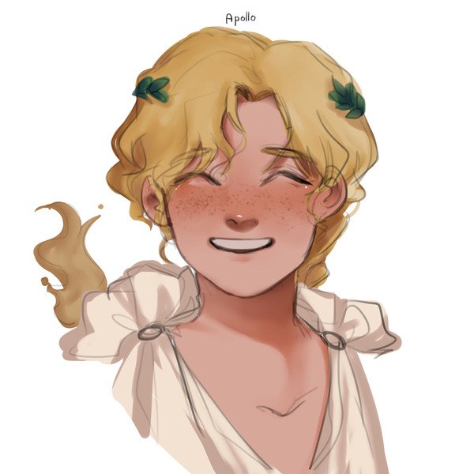
-
Edad:
15 años (aspecto Humano)
-
Raza:
Semielfo
-
Estado Actual
Vivo y perdido
Historia:
Jackson vivía en el circo con sus padres, un día durante el festival de año nuevo decidieron dar una función en uno de los mas grandes reinos llamado Arcadia. Ante la magestuosidad del Show, él y su familia practicaron sin cesar, para dar su mejor espectáculo.
Pero ese mismo día, las cosas no fueron bien para Jackson, su truco que había estado trabajando durante meses en el trapecio no salió como él esperaba, cayéndose a la Red. Frustrado por su truco final decide, no seguir presenciando el show y irse a descansar a su carruaje.
rustrado por su truco final decide, no seguir presenciando el show y irse a descansar a su carruaje. Cuando despierta de su cama, se ve envuelto en llamas, Obligado a salir presenciar su mayor infierno. Su familía había quedado atrapada. Jackson sin nadie a que acudir se queda en la ciudad, merdoeando por las calles. Con su nuevo hogar el adoquín,alquitrán, piedras, vagones y el hambre que lo acompañaría según su experiencia eternamente.
Jonas The Younger
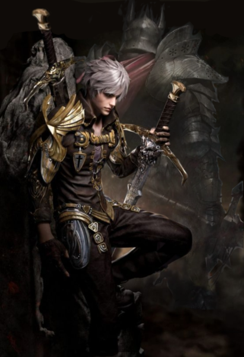
-
Edad:
24 años
-
Raza:
Humano
-
Estado Actual
¿Enemigo?
Historia:
Fui un huérfano abandonado desde bebé criado en las calles de los barrios bajos, viví del pillaje hasta que nos encontramos con un objetivo que nuestra pandilla de delincuentes juveniles no pudo robar, un hombre veterano que nos venció sin necesidad de desenvainar y sin lastimarlos gravemente, me sorprendí, sin embargo, de que el hombre riera después de darnos una paliza, en vez de entregarnos a las autoridades.Nos ofreció techo, comida, educación y entrenamiento.
Resultó ser un caballero retirado, que, tras caer de la gracia de la corona, se habia vuelto mercenario. Al cabo de unos años los niños malnutridos y harapientos se habían convertido en expertos mercenarios, de los mejores del reino, a las órdenes del Capitán Jonas Eldarion, legendario aventurero.
Diez años después, aún despierto horrorizado con los gritos de mis compañeros masacrados y la figura destrozada de mi mentor, de quien tomé nombre, dedicándome sus últimas palabras, aun frescos en mis recuerdos. La próxima vez... yo moriré primero.
Gremio de cazadores
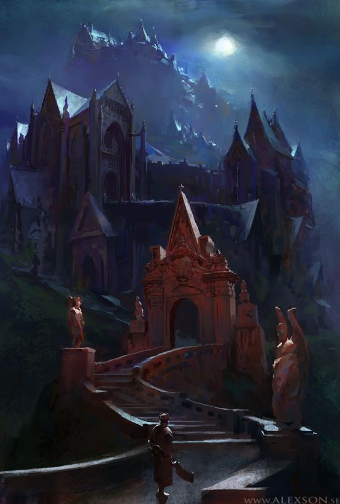
El gremio de cazadores tiene una historia desconocida, no se sabe quienes lo fundaron o cual es el motivo de su existencia
pero si hay algo asegurado es que este lugar tiene un sinfin de secretos.
Su organizacion es bastante simple:
El circulo de Oficiales:
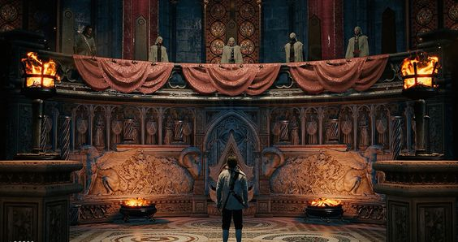
Es la mayor autoridad del gremio y esta compuesta de 4 miembros que son reemplazados por la muerte o la vejez. Gobiernan Gelderland tras las sombras
y casi no se encargan de los asuntos militares.
Los requerimientos para ser parte de este consejo son desconocidos para soldados de bajo rango, pero lo
que si es de publico conocimiento es que se debe ser portador de un gran poder para poder estar en el. Lo
que lleva a entender que si bien, no forman parte como tal del ejercito, son indivuos una fuerza increible.
Comandantes:
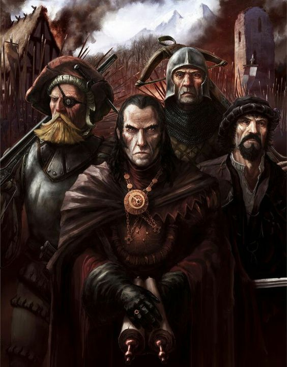
Son 8 en total y tienen a su cargo a 10 escuadrones cada uno. Se encargan de asignar las misiones y organizar
al personal a su cargo.
Deben su lealtad unica y exclusivamente al circulo, lo cual lleva a que en ocaciones envien escuadrones a morir
solo para cumplir misiones encomendadas y ganarse su favor. Se sabe que no todos son de esa manera pero losmas
ambiciosos solo se preocupan por ellos mismos.
Un factor que ellos no conocen es que el circulo de oficiales mide el exito de estos individuos en la cantidad
de escuadrones que pueden mantener con vida.
Lideres de escuadron:
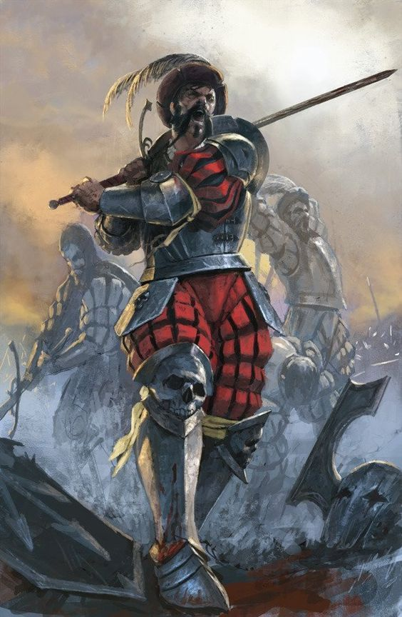
Los Lideres de escuadron son los primeros en lanzarse a la batalla y marcan el ritmo de las mismas, se encargan de entrenar
a los escuadrones que tienen a su cargo y son el contacto con los comandantes.
Son conisederados ademas como unidades de elite altamente entrenadas en varios campos de la guerra y son ,a veces, enviados a cumplir
misiones en solitario cuando se considera que a sus escuadrones les falta fuerza para cumplir algo en conjunto.
Es raro que salgan al campo cuando las misiones son de bajo nivel, y por lo general delegan estas misiones a los capitanes
Capitanes:
Son los segundos al mando en el escuadron y tienen una relacion mas familiar con ellos.
Ayudan y toman el mando del Lider de escuadron cuando este se ausenta o cuando se sale al campo en misiones donde este no se encuentra
Miembros generales de Escuadron
Si bien todos los cazadores son exepcionales, los de menor habilidad o rango forman parte de los escuadrones como miembros regulares de estos
Cumplen las misiones encomendadas por sus comandantes y son los que mas ponen su vida en riesgo.
De hecho, sino se tiene la fuerza suficiente, la esperanza de vida como miembro util no supera los 5 años
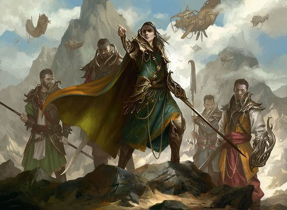
Logistica
Aquellos miembros del gremio que por alguna razon no pueden, o no quieren luchar, se encargan de proveerles
a aquellos que si pueden.
Cocineros, herreros, lavanderos, alquimistas y medicos son tambien miembros del gremio y deben , y son, igualmente respetados
por sus compañeros activos en la batalla.
Consejo de Ulthar
El consejo de Ulthar gobierna dicha ciudad. Esta compuesto de 4 miembros, los cuales reencarnan cada vez que mueren de manera casi automatica
en el primer nacido que llega desde su muerte, mantienen ciertos rasgos de su aspecto, como raza o modos de comportamiento.
Tambien mantienen sus recuerdos, pero solo a partir de que comenzo su ciclo de reencarnacion, anterior a eso no recuerdan nada, ni siquiera sus nombres.
Cada uno es experto en su campo y se encargan, en cada una de sus vidas de seguir aumentando sus conocimientos y poder.
Manus:
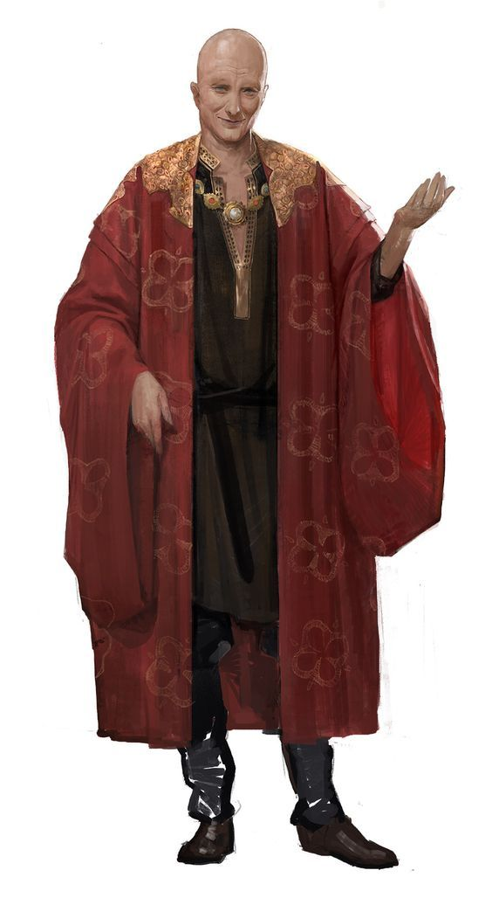
Es el Clerigo del consejo, por lo cual es la autoridad en cuanto a religion en todo Ulthar. Es experto en
tecnicas de sanacion tanto mental como fisica.
Yalena
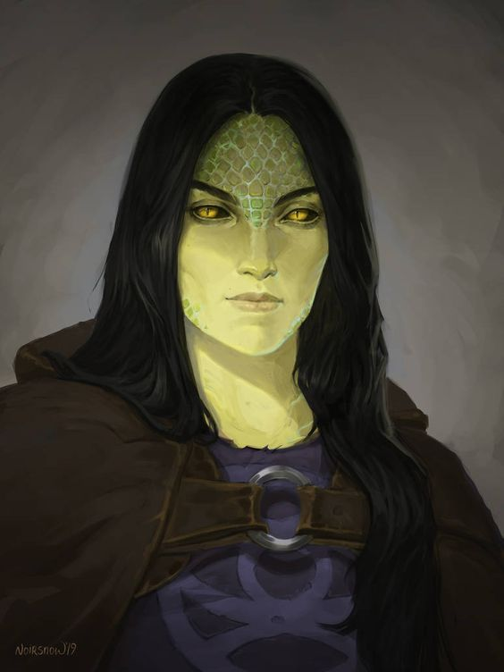
Maga y hechizera, es experta en estos dos campos, lo unico que lamenta es no recordar todo lo que su primer yo si recuerda.
Actualmente esta experimentando con cronomancia para recuperar esos recuerdos, pero ha resultado ser demasiado dificil para ella por alguna razon.
Thingol:
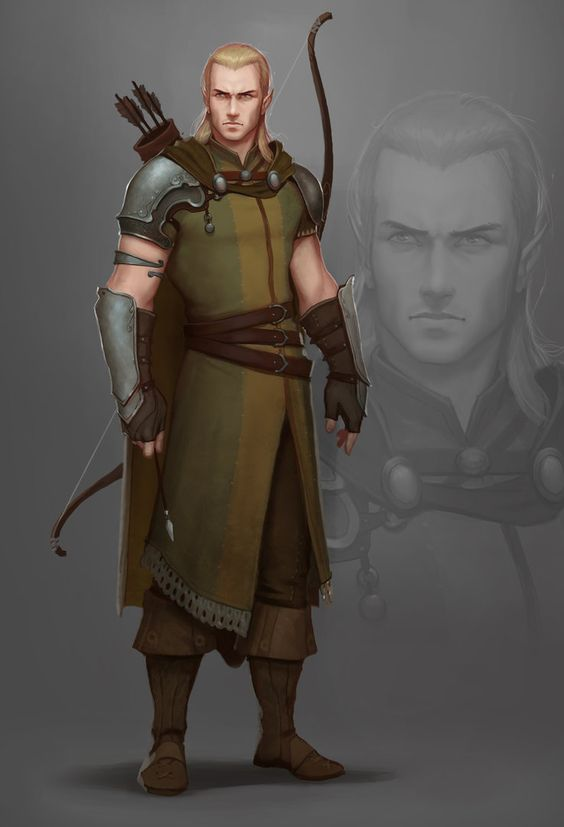
Experto en el combate cuerpo a cuerpo, es el mas reservado y solo se le ve hablar cuando es sumamente necesario.
Cain:
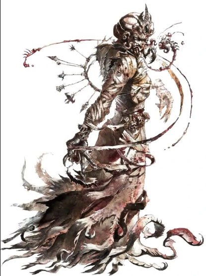
Es experto en manipulacion mental y alquimia, siempre ha sido de pocos amigos y detesta las faltas de respeto.
Su actitud, a veces demasiado agresiva le ha llevado a Ulthar a tener algunos problemas diplomaticos. Pero es bien sabido que no actuara de un modo en que el problema no pueda solucionarse.
Integrante ya fallecido: Bisou
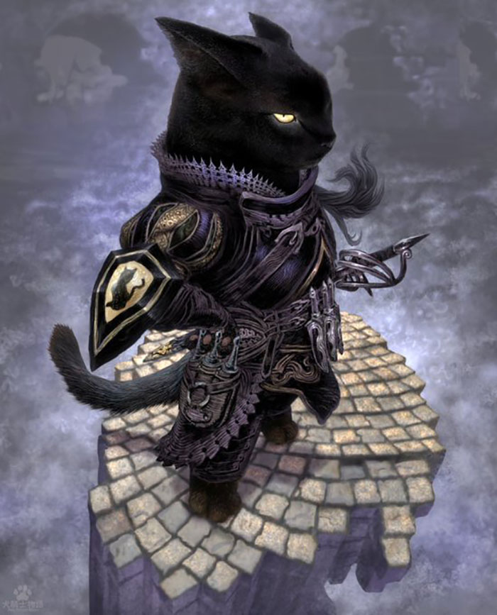
No se sabe muy bien quien era, ya que los miembros no lo recuerdan muy bien.
Pero era un miembro del consejo que murio en una guerra contra los dioses antiguos al parecer, Manus fue quien lo reemplazo.